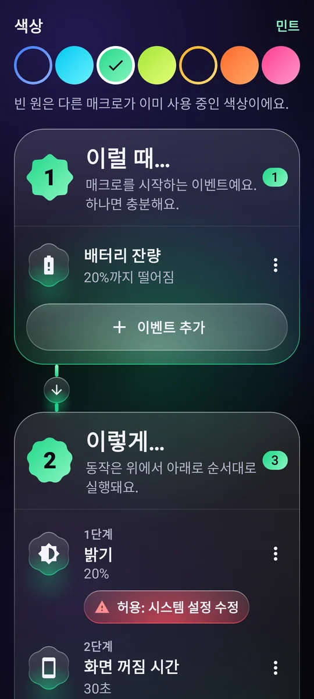
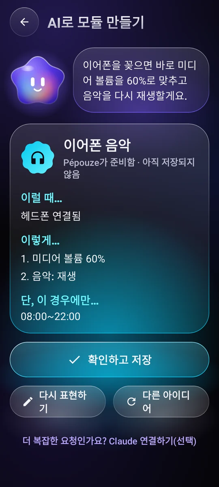
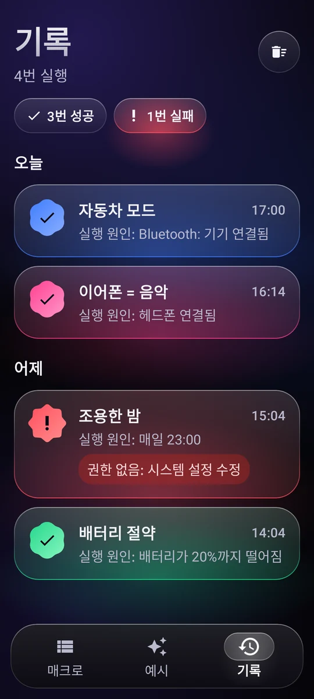

매크로를 시작하는 순간
시간과 요일, Wi-Fi, 블루투스, 이어폰, 충전기, 배터리 잔량, 화면 켜짐, 앱 실행…
트리거 11종Android를 위한 자동화
‘언제… 실행…’ 간단한 규칙 하나만 적으세요. 딱 맞는 순간에 휴대폰이 알아서 처리합니다.
사용 방법
매크로는 한 문장이면 충분합니다. 블록 세 개를 조합하기만 하면 되고, 프로그래밍은 필요 없어요.
시간과 요일, Wi-Fi, 블루투스, 이어폰, 충전기, 배터리 잔량, 화면 켜짐, 앱 실행…
트리거 11종음량, 벨소리, 방해 금지, 밝기, 손전등, 음악, 알람, 타이머, 알림, 텍스트 읽어 주기, 앱이나 링크 열기, 화면의 텍스트 누르기…
자유롭게 조합하는 동작 29종시간대, 요일, 배터리 잔량, 충전 중인지 여부.

예시
예시를 복사하고 내게 맞게 고치면 끝. 몇 가지를 소개할게요.
차량 블루투스에 연결되면 음량이 커지고 음악이 다시 재생됩니다.
밤 11시가 되면 방해 금지가 켜지고, 밝기는 최저로, 음악은 꺼집니다.
배터리가 20% 아래로 떨어지면 화면이 어두워지고 더 빨리 꺼집니다.
이어폰을 꽂으면 부드러운 음량으로 재생이 시작됩니다.
아침에 충전기를 뽑으면 휴대폰이 시간과 배터리 잔량을 알려 줍니다.
일요일부터 목요일까지 밤 10시 30분에 휴대폰을 내려놓으라는 다정한 알림이 오고, 화면이 어두워집니다.

나의 어시스턴트, Pépouze
원하는 것을 한 문장으로 설명하세요. Pépouze가 매크로를 만들면, 확인한 뒤 저장하면 됩니다.
나“이어폰을 꽂으면 음악을 60%로 틀어 줘”
공유하고 실행하기
커뮤니티와 아이디어를 나누고, 앱을 열지 않고도 매크로를 실행하세요.
사용자들이 공유한 매크로 라이브러리. 마음에 드는 매크로를 복사하고, 내 매크로도 올려 보세요. 커뮤니티 보기
친구에게 보여 주거나 동영상에 넣어 보세요. 어떤 카메라로든 열리고, Pépouze가 가져옵니다.
홈 화면 위젯, 빠른 설정 타일, 바로가기로 매크로가 바로 실행됩니다.
Pépouze는 13개 언어를 지원하며 휴대폰에서 바로 요청을 이해합니다.
주도권은 언제나 나에게
실행될 때마다 성공 여부와 무엇이 실행시켰는지가 기록됩니다.
권한은 매크로에 필요할 때만, 설명과 함께 요청합니다.
Google Drive나 휴대폰에, 계정 없이. 계정이 있다면 온라인에도.
매크로는 내 휴대폰에 있습니다. 방문자 분석도, 데이터 판매도 없어요.

요금
광고도, 구독도, 숨은 조건도 없습니다. Pépouze는 독립 프로젝트입니다.
€0
자주 묻는 질문
매크로에 추가한 동작을 위해서만 사용합니다. 화면의 텍스트 누르기, 뒤로/홈 버튼 누르기, 화면 잠그기, 스크린샷 찍기, 어떤 앱이 열리는지 알기 같은 것들이죠.
화면의 텍스트는 누를 대상을 찾기 위해서만 읽으며, 휴대폰 밖으로는 아무것도 나가지 않습니다. Pépouze는 여러분이 작성한 규칙대로만 움직입니다. 이 서비스는 별도의 설명을 거쳐 여러분이 동의해야만 켜지고, 언제든지 끌 수 있어요.
아니요. 계정은 매크로를 온라인에 백업하는 용도로만 쓰입니다. 계정 없이도 Google Drive나 휴대폰에 파일로 백업할 수 있어요.
네, 대부분 작동합니다. Pépouze는 백그라운드에서 이벤트를 기다리고 있어요. Android가 앱을 절전 상태로 만들지 않도록, Android 설정의 앱 정보 페이지에서 ‘배터리: 제한 없음’을 선택하세요. 화면을 조작하는 동작은 휴대폰 잠금이 해제되어 있어야 합니다.
아니요. ‘문자 준비’ 동작은 번호와 내용이 입력된 상태로 메시지 앱을 열어 줄 뿐, 보내기 버튼은 직접 누르셔야 합니다.
앱에서는 내 계정 → 계정 삭제. 앱 없이 삭제하려면 계정 삭제 페이지를 참고하세요.
Android에서 무료, 광고 없음.
Pépouze가 곧 출시됩니다. 누구보다 먼저 써 보세요. 메일을 보내 주시면 초대장을 보내 드립니다.